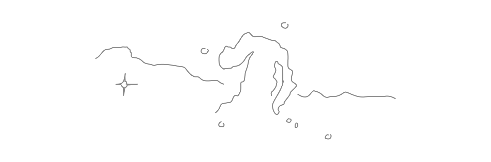
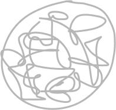
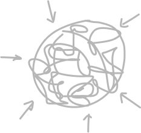
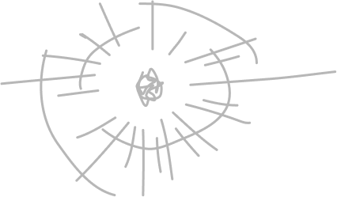
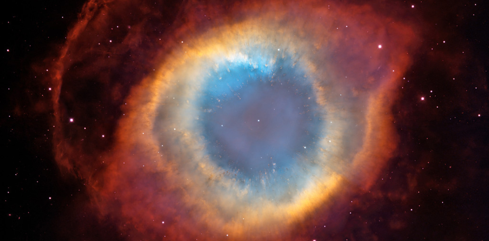

Vida e morte das estrelas
Evolução estelar explicada com ilustrações
Estrelas são esferas gigantes de plasma que emitem energia
através de reações nucleares em seu interior.

As estrelas se formam em grandes nuvens de poeira e gás ionizado chamadas de nebulosas.
No meio dessa massa gasosa, a gravidade atua juntando os átomos ionizados provocando choques intensos e
liberação de calor. Quando certa temperatura é atingida, reações de fusão nuclear são iniciadas, transformando
Hidrogênio em Hélio e liberando muita energia e calor. Nasce uma estrela!

As estrelas continuam consumindo seu combustível por bilhões de anos até
não possuirem hidrogênio suficiente para fusionar, então a gravidade da estrela
começa a comprimir sua massa aumentando a temperatura e a pressão no seu interior
e iniciando uma nova reação de fusão nuclear, então as camadas mais externas da estrela
se expandem, surgindo, assim, uma gigante vermelha.

As gigantes vermelhas permanecem fusionando vários elementos até chegar no ferro, nesse momento
a estrela não consegue mais realizar fusão nuclear, então ela começa a colapsar rapidamente,
resultando em uma explosão colossal chamada de supernova, capaz de ofuscar o brilho de uma galáxia inteira.

A supernova lança vários elementos da tabela periódica para o espaço
e a massa restante da estrela poderá dar origem a uma estrela de nêutrons ou a um buraco negro.
"Nós somos feitos de poeira de estrelas"
Carl Sagan
Vídeos interessantes sobre o assunto
